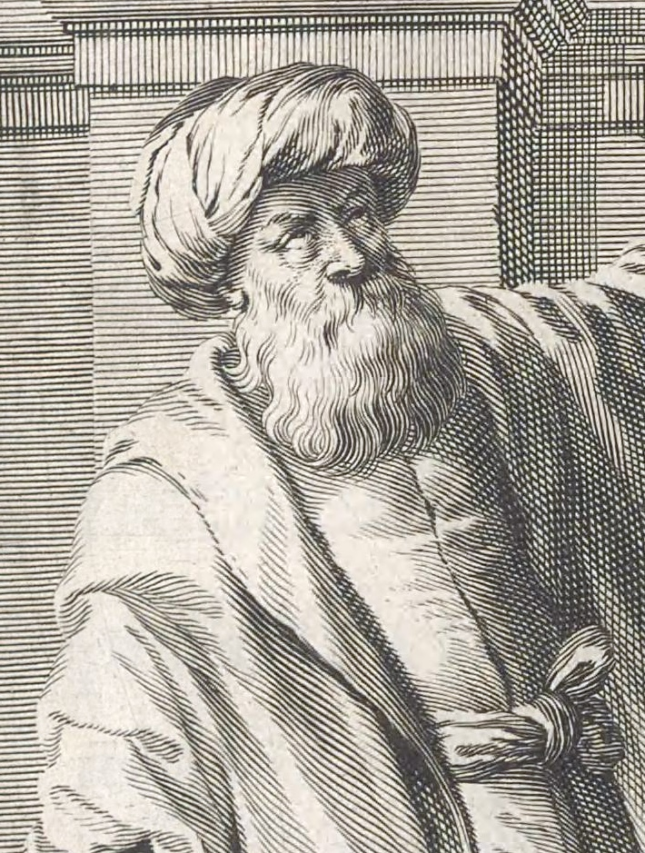
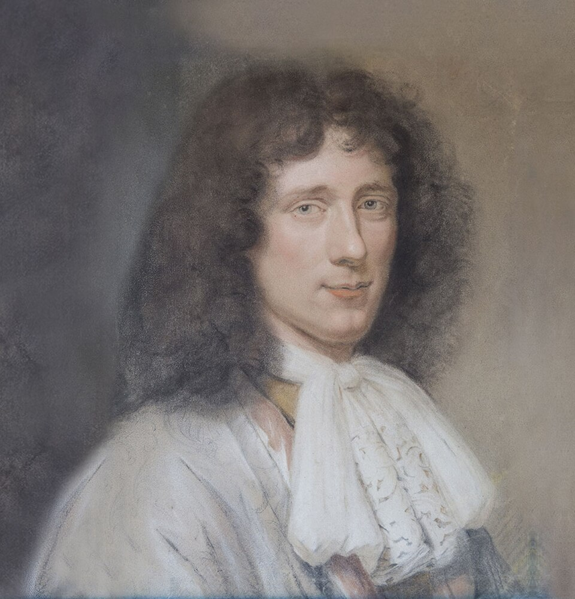
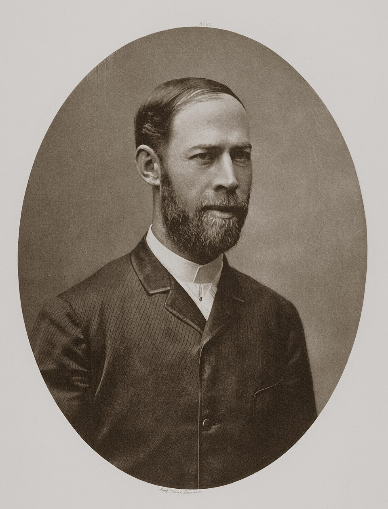
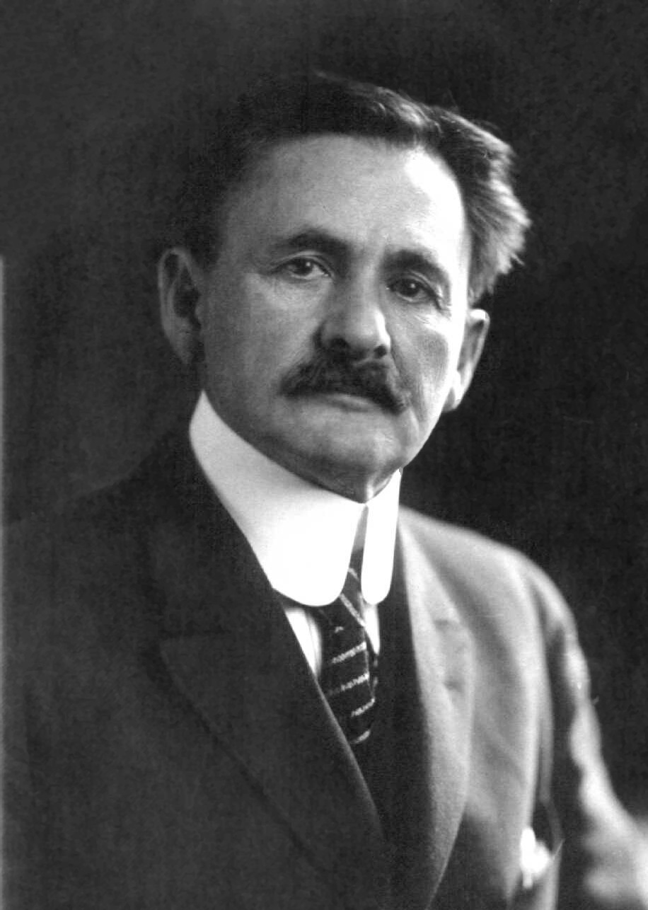
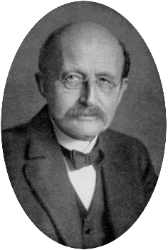
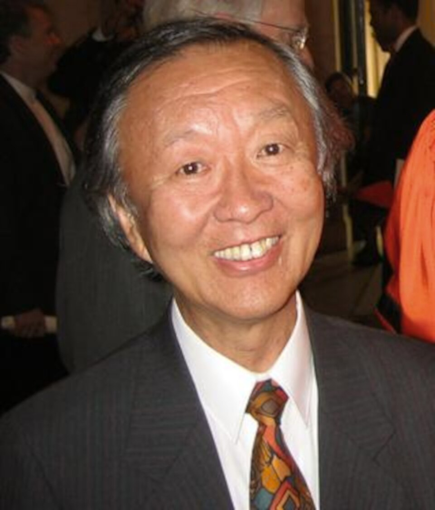

Compagnon du Dossier XXVIII · La Lumière
Les bâtisseurs de la Lumière
Dix-neuf fiches, en six actes, dans l'ordre du récit : la question que chacun a posée, ce qu'il a fait, ce qu'il laisse. Avec sa part d'ombre.
Fresnel et Hertz morts avant quarante ans ; Maiman sans Nobel ; Michelson persuadé d'avoir échoué ; Planck qui perd deux fils ; Kao qui reçoit son prix sans pouvoir parler.
Pourquoi ces fiches
Une science incarnée, une chaîne de questions, une part d'ombre
Le dossier raconte des expériences. Ces fiches racontent les personnes qui les ont montées — non pour héroïser, mais parce que chaque fiche répond à la précédente. Mozi demande pourquoi l'image est renversée ; Ibn al-Haytham demande si l'œil émet ; Kepler demande où l'image se forme ; Newton demande si le prisme fabrique ; Young demande si c'est une onde ; Maxwell demande si c'est la même chose que l'électricité ; Planck demande pourquoi le four ne diverge pas ; Einstein demande si les quanta sont réels ; Bell demande si l'on peut trancher.
La part d'ombre n'est pas un ornement. Fresnel meurt de la tuberculose à trente-neuf ans, Hertz à trente-six sans avoir vu la radio. Maiman allume le premier laser et n'aura jamais le Nobel ; son article est refusé par Physical Review Letters. Michelson a vécu son résultat nul comme un échec. Planck perd un fils à Verdun et l'autre exécuté en 1945. Kao reçoit son prix en 2009 sans pouvoir prononcer de discours. La science n'est pas une suite de triomphes.
Chaque image porte sa licence et son crédit, vérifiés un par un sur Wikimedia Commons. Deux personnages n'ont aucun portrait authentique — Mozi et Ibn al-Haytham —, et c'est écrit sous l'image. Un troisième, Maiman, n'a pas d'image ici du tout : sa seule photographie disponible porte une licence invraisemblable, et une case vide vaut mieux qu'un crédit douteux.
Objectif 1
Une science incarnée
Mettre des visages sur la loi de Snell, les franges de Young, la constante de Planck.
Objectif 2
Une chaîne de questions
Chaque fiche répond à la précédente : Mozi → Alhazen → Kepler → Newton → Young → Maxwell → Planck → Einstein → Bell → Aspect.
Objectif 3
La part d'ombre
Les morts précoces, les prix manqués, les dépressions, les refus de publication. Ce que les manuels omettent.
Six actes
- Acte IVoir — Mozi, Ibn al-Haytham, Kepler
- Acte IIRayons et couleurs — Newton, Huygens
- Acte IIIMesurer et faire onduler — Rømer, Young, Fresnel, Fizeau, Maxwell, Hertz, Michelson
- Acte IVLes quanta — Planck, Einstein, Compton
- Acte VLa lumière domestiquée — Maiman, Kao
- Acte VIL'intrication — Bell, Clauser, Aspect, Zeilinger
Galerie
Dix-neuf visages
 MoziLe premier trou dans le mur
MoziLe premier trou dans le mur

Ibn al-HaythamL'œil reçoit, il n'émet pas Johannes KeplerL'image renversée sur la rétine
Johannes KeplerL'image renversée sur la rétine
 Isaac NewtonLe blanc n'est pas pur
Isaac NewtonLe blanc n'est pas pur

Christiaan HuygensChaque point du front d'onde est une source Ole RømerLa lumière est en retard
Ole RømerLa lumière est en retard
 Thomas YoungLumière plus lumière égale obscurité
Thomas YoungLumière plus lumière égale obscurité
 Augustin FresnelLe point lumineux au cœur de l'ombre
Augustin FresnelLe point lumineux au cœur de l'ombre
 Hippolyte FizeauUne roue dentée contre la lumière
Hippolyte FizeauUne roue dentée contre la lumière
 James Clerk MaxwellLa lumière est électromagnétique
James Clerk MaxwellLa lumière est électromagnétique

Heinrich HertzLes ondes de Maxwell existent
Albert A. MichelsonLe résultat nul le plus célèbre
Max PlanckUn acte de désespoir Albert EinsteinLe point de vue heuristique
Albert EinsteinLe point de vue heuristique
 Arthur ComptonLe photon a une quantité de mouvement
Theodore MaimanLe 16 mai 1960
Arthur ComptonLe photon a une quantité de mouvement
Theodore MaimanLe 16 mai 1960

Charles K. KaoLe verre assez pur pour Internet John Stewart BellUn débat philosophique devenu expérience
John Stewart BellUn débat philosophique devenu expérience
 Clauser, Aspect et ZeilingerCeux qui ont fait le test
Clauser, Aspect et ZeilingerCeux qui ont fait le test
Acte I
Voir — Antiquité et Moyen Âge
Trois hommes, trois questions qui se répondent à mille ans d'intervalle : pourquoi l'image est-elle à l'envers, l'œil envoie-t-il ou reçoit-il, où l'image se forme-t-elle.
Fiche 01 · v. 470 – v. 391 av. J.-C.
Mozi
« Le premier trou dans le mur »
Philosophe chinois, fondateur du mohisme · période des Royaumes combattants · œuvre : le Mozi, dont les chapitres « canons » traitent d'optique.
1 · Contexte
Artisan devenu maître à penser, Mozi défend « l'amour universel » et l'utilité contre le ritualisme confucéen ; son école, organisée et disciplinée, pratique aussi l'ingénierie militaire et la logique.
2 · L'œuvre
Les canons mohistes contiennent huit propositions d'optique : ombre, chambre noire à petit trou avec image renversée, miroirs plans, concaves et convexes. L'image renversée y est expliquée par le croisement des rayons rectilignes au niveau de l'ouverture — la plus ancienne formulation écrite connue de la propagation rectiligne.
3 · Postérité
L'école mohiste disparaît sous les Qin ; ses textes ne sont redécouverts et commentés qu'à l'époque moderne. Le satellite chinois de communication quantique lancé en 2016 porte son nom : Micius.
Fiche 02 · v. 965 Bassorah – v. 1040 Le Caire
Ibn al-Haytham (Alhazen)
« L'œil reçoit, il n'émet pas »
Mathématicien, astronome, physicien · Bassorah, Bagdad, Le Caire (Égypte fatimide) · œuvre : Kitab al-Manazir (v. 1011-1021), sept livres.
1 · Contexte
Formé à Bassorah, il est appelé en Égypte par le calife al-Hakim, selon la tradition pour régulariser les crues du Nil. L'échec du projet le conduirait à feindre la folie et à vivre en résidence surveillée jusqu'à la mort du calife en 1021 — récit transmis par Ibn al-Qifti, dont les détails restent invérifiables.
2 · L'œuvre
Il renverse la théorie de l'émission : la lumière va des objets à l'œil. Il vérifie les lois de la réflexion sur sept types de miroirs, mesure la réfraction avec un instrument gradué, étudie la chambre noire avec plusieurs lampes, l'anatomie de l'œil et la psychologie de la perception. Il pose le « problème d'Alhazen » et étudie le crépuscule, l'arc-en-ciel et la grandeur apparente de la Lune à l'horizon.
3 · Postérité
Traduit en latin (De aspectibus) vers 1200, imprimé par Risner en 1572, lu par Bacon, Witelo, Kepler. L'UNESCO a fait de 2015, année internationale de la lumière, le millénaire de son Optique. « Inventeur de la méthode scientifique » est une formule trop simple ; « l'un de ses grands pionniers » est juste.
Fiche 03 · 27 déc. 1571 Weil der Stadt – 15 nov. 1630 Ratisbonne
Johannes Kepler
« L'image renversée sur la rétine »
Astronome, mathématicien · université de Tübingen · œuvres optiques : Ad Vitellionem paralipomena (1604), Dioptrice (1611).
1 · Contexte
Assistant de Tycho Brahe à Prague, mathématicien impérial, il cherche à comprendre pourquoi les observations à travers un petit trou donnent au diamètre de la Lune une taille qui dépend du trou. C'est de là que part son optique.
2 · L'œuvre
En 1604, il explique que la cornée et le cristallin forment sur la rétine une image renversée, et que l'inversion n'est pas un problème optique mais perceptif. En 1611, après la lunette de Galilée, il en donne la théorie, propose le télescope à deux lentilles convexes et décrit la réflexion totale. Entre-temps, il a découvert que Mars suit une ellipse.
3 · Postérité
Sa séparation entre « former une image » et « la voir » fonde l'optique physiologique moderne. Il meurt à Ratisbonne en allant réclamer des arriérés de salaire.
Acte II
Rayons et couleurs
Le blanc n'est pas pur, et un front d'onde est fait d'ondelettes. Deux théories qui s'affrontent un siècle durant, sans qu'aucune autorité puisse trancher.
Fiche 04 · 25 déc. 1642 Woolsthorpe – 20 mars 1727 Kensington (julien)
Isaac Newton
« Le blanc n'est pas pur »
Mathématicien, physicien · Trinity College, Cambridge · œuvres : lettre sur la lumière et les couleurs (1672), Principia (1687), Opticks (1704).
1 · Contexte
Né orphelin de père, élevé par sa grand-mère, il entre à Cambridge en 1661. La peste de 1665-1666 le renvoie à Woolsthorpe : c'est là, avec un prisme acheté à une foire, qu'il fait ses expériences sur la couleur.
2 · L'œuvre
La tache oblongue, l'experimentum crucis à deux prismes, la théorie corpusculaire, le télescope à miroir de 1668, les anneaux colorés des lames minces ; l'Opticks, écrit en anglais et non en latin, se termine par des « Queries » qui laissent ouvertes bien des questions.
3 · Postérité
Sa théorie corpusculaire pèse sur l'optique anglaise pendant un siècle ; Young en fera les frais. Mais son exigence — isoler un phénomène, le mesurer, le reproduire — reste. Il n'y a pas de pomme dans l'histoire du prisme.
Fiche 05 · 14 avr. 1629 La Haye – 8 juil. 1695 La Haye
Christiaan Huygens
« Chaque point du front d'onde est une source »
Mathématicien, astronome, physicien · Leyde, Bréda · œuvre optique : Traité de la lumière (présenté 1678, publié 1690).
1 · Contexte
Fils d'un diplomate et poète, formé aux mathématiques par Descartes en personne, il découvre Titan et l'anneau de Saturne avec des lentilles qu'il taille lui-même, invente l'horloge à pendule, et dirige l'Académie des sciences de Paris à sa fondation.
2 · L'œuvre
Son principe : chaque point atteint par une onde émet une ondelette secondaire, et l'enveloppe de ces ondelettes forme le nouveau front. Il en tire la réflexion, la réfraction, et explique la double réfraction du spath d'Islande. C'est lui qui, à partir du retard de Rømer, calcule le premier une vitesse de la lumière.
3 · Postérité
Sa théorie ondulatoire, sans notion d'interférence, ne convainc pas face à Newton. Fresnel la complètera : le principe de « Huygens-Fresnel » est toujours le point de départ de la diffraction.
Acte III
Mesurer et faire onduler
Sept personnages, une seule question posée sept fois : que devrait-on observer si… De l'éclipse d'Io aux ondes radio de Karlsruhe.
Fiche 06 · 25 sept. 1644 Aarhus – 19 sept. 1710 Copenhague
Ole Rømer
« La lumière est en retard »
Astronome · université de Copenhague · Observatoire de Paris (1672-1681).
1 · Contexte
Recruté par Jean Picard pour l'Observatoire de Paris, il participe aux mesures de longitude qui utilisent les éclipses des satellites de Jupiter comme horloge universelle.
2 · L'œuvre
En 1676, il constate que les éclipses d'Io prennent du retard quand la Terre s'éloigne de Jupiter et de l'avance quand elle s'en rapproche. Il l'annonce à l'Académie et prédit une éclipse en retard de dix minutes : elle l'est. La lumière a une vitesse finie. Il ne donne pas de valeur en kilomètres, mais un retard — environ 22 minutes pour l'orbite terrestre, un peu trop.
3 · Postérité
Cassini, son directeur, ne le suit pas ; Huygens et Newton, si. Rentré au Danemark, il devient astronome royal, maire de Copenhague, réforme les poids et mesures et invente le cercle méridien. Presque toutes ses observations brûlent dans l'incendie de 1728.
Fiche 07 · 13 juin 1773 Milverton – 10 mai 1829 Londres
Thomas Young
« Lumière plus lumière égale obscurité »
Médecin, physicien, égyptologue · Édimbourg, Göttingen, Cambridge · conférences Bakeriennes (1801, 1803).
1 · Contexte
Enfant prodige lisant à deux ans, polyglotte, il étudie la médecine et s'intéresse à l'œil : il explique l'accommodation par la déformation du cristallin et propose, en 1802, que la vision des couleurs repose sur trois types de récepteurs.
2 · L'œuvre
En 1801, il défend une théorie ondulatoire de la lumière, forge le mot interférence, explique les couleurs des lames minces ; en 1803, il partage un rayon de soleil avec une carte et obtient des franges. Il calcule les longueurs d'onde des couleurs. Il décrit aussi l'astigmatisme et donne son nom au module d'élasticité.
3 · Postérité
Attaqué violemment par la presse anglaise fidèle à Newton, il se tourne vers l'égyptologie et fait avancer le déchiffrement des hiéroglyphes avant Champollion. L'expérience des deux fentes deviendra, avec un photon à la fois, l'emblème de la physique quantique.
Fiche 08 · 10 mai 1788 Broglie – 14 juil. 1827 Ville-d'Avray
Augustin Fresnel
« Le point lumineux au cœur de l'ombre »
Ingénieur des Ponts et Chaussées, physicien · École polytechnique · mémoire sur la diffraction (1818).
1 · Contexte
Ingénieur des routes en province, suspendu pendant les Cent-Jours pour royalisme, il profite de son inactivité forcée pour refaire les expériences de diffraction, sans connaître Young.
2 · L'œuvre
Il unit le principe de Huygens et l'interférence, calcule les figures de diffraction et répond au concours de l'Académie. Poisson objecte qu'un disque opaque devrait alors montrer un point brillant au centre de son ombre ; Arago le vérifie. Fresnel établit ensuite que les ondes lumineuses sont transversales, ce qui explique la polarisation, et conçoit pour les phares les lentilles à échelons.
3 · Postérité
Mort de tuberculose à trente-neuf ans, membre de la Royal Society quelques semaines avant sa mort. Ses lentilles éclairent encore les côtes ; ses équations décrivent encore les reflets.
Fiche 09 · 23 sept. 1819 Paris – 18 sept. 1896 Venteuil
Hippolyte Fizeau
« Une roue dentée contre la lumière »
Physicien · Collège de France, Observatoire · Académie des sciences (1860).
1 · Contexte
Fils d'un médecin, riche, il travaille chez lui. Avec Foucault, il photographie le Soleil (1845), puis les deux amis se brouillent et se lancent séparément dans la mesure de c.
2 · L'œuvre
En 1849, entre Suresnes et Montmartre, sa roue à 720 dents mesure pour la première fois la vitesse de la lumière sur Terre : environ 315 000 km/s. En 1848, il avait prédit le décalage des raies spectrales par le mouvement (l'effet « Doppler-Fizeau »). En 1851, il mesure l'entraînement de la lumière par l'eau en mouvement, expérience qu'Einstein citera comme décisive.
3 · Postérité
Sa méthode du temps de vol est celle du LiDAR et des télémètres laser. Foucault, avec son miroir tournant, le dépassera en précision — mais c'est Fizeau qui a ouvert la voie.
Fiche 10 · 13 juin 1831 Édimbourg – 5 nov. 1879 Cambridge
James Clerk Maxwell
« La lumière est électromagnétique »
Physicien, mathématicien · Édimbourg, Trinity College (Cambridge) · A Dynamical Theory of the Electromagnetic Field (1865).
1 · Contexte
Enfant curieux de tout dans un domaine écossais, il publie à quatorze ans un article sur les ovales, explique les anneaux de Saturne, réalise la première photographie en couleurs (1861) selon le principe de Young.
2 · L'œuvre
En 1865, il rassemble électricité et magnétisme en équations dont la solution est une onde se propageant à une vitesse calculée à partir de constantes électriques : la vitesse de la lumière. « La lumière elle-même est une perturbation électromagnétique. » Il fonde aussi la théorie cinétique des gaz et imagine le démon qui porte son nom.
3 · Postérité
Mort d'un cancer à quarante-huit ans, sans avoir vu Hertz produire ses ondes. Einstein gardait son portrait au mur avec ceux de Newton et Faraday.
Fiche 11 · 22 févr. 1857 Hambourg – 1er janv. 1894 Bonn
Heinrich Hertz
« Les ondes de Maxwell existent »
Physicien · Berlin (élève de Helmholtz), Karlsruhe, Bonn.
1 · Contexte
Helmholtz lui propose de tester la théorie de Maxwell ; Hertz juge d'abord le problème trop difficile, puis y revient à Karlsruhe avec un éclateur et une boucle de fil.
2 · L'œuvre
Entre 1886 et 1888, il produit des ondes électromagnétiques, mesure leur longueur d'onde, les réfléchit, les réfracte dans un prisme de poix, les polarise : elles se comportent comme la lumière. Au passage, il remarque que l'ultraviolet facilite l'étincelle — première observation de l'effet photoélectrique.
3 · Postérité
Il ne voit aucune application à ses ondes ; Marconi en fera la radio dix ans plus tard. Mort à trente-six ans d'une maladie auto-immune. L'unité de fréquence porte son nom.
Fiche 12 · 19 déc. 1852 Strelno, Prusse – 9 mai 1931 Pasadena
Albert A. Michelson
« Le résultat nul le plus célèbre »
Physicien · Académie navale des États-Unis · Nobel de physique 1907, le premier Américain en sciences.
1 · Contexte
Émigré enfant depuis la Prusse (aujourd'hui Strzelno, Pologne) vers les camps miniers de Californie et du Nevada, admis à l'Académie navale sur intervention du président Grant, il mesure c pour la première fois en 1879, à vingt-six ans.
2 · L'œuvre
Son interféromètre (1881) sépare un faisceau en deux bras perpendiculaires. Avec Morley, en 1887, il ne détecte aucun vent d'éther. Il mesure ensuite le diamètre d'une étoile (1920), et raffine c jusqu'à la fin de sa vie : 299 796 km/s en 1926, puis dans un tube sous vide d'un mile.
3 · Postérité
Il a vécu son résultat nul comme un échec et a longtemps cru à l'éther ; ses dépressions sont documentées. Son interféromètre est aujourd'hui le cœur de LIGO et Virgo.
Acte IV
Les quanta
Trois hommes qui découvrent, souvent malgré eux, que l'énergie de la lumière s'échange par paquets.
Fiche 13 · 23 avr. 1858 Kiel – 4 oct. 1947 Göttingen
Max Planck
« Un acte de désespoir »
Physicien · Munich, Berlin · Nobel de physique 1918.
1 · Contexte
Un professeur lui déconseille la physique, « science achevée ». Il choisit la thermodynamique, la plus abstraite, et hérite de la chaire de Kirchhoff à Berlin.
2 · L'œuvre
Le 14 décembre 1900, pour rendre compte du spectre du corps noir mesuré à la Physikalisch-Technische Reichsanstalt, il suppose que l'énergie est échangée par quanta E = hν. Il appellera ce choix « un acte de désespoir » et mettra des années à en accepter la réalité physique — il critiquera même, en 1913, l'hypothèse des quanta de lumière d'Einstein.
3 · Postérité
Il perd un fils à Verdun, un autre exécuté en 1945 pour le complot contre Hitler, et sa maison sous les bombes. Sa constante est, depuis 2019, exacte par définition, comme c.
Fiche 14 · 14 mars 1879 Ulm – 18 avr. 1955 Princeton
Albert Einstein
« Le point de vue heuristique »
Physicien · École polytechnique de Zurich · Nobel de physique 1921 (remis en 1922) « pour la loi de l'effet photoélectrique ».
1 · Contexte
Expert de troisième classe à l'Office des brevets de Berne, il publie en 1905 quatre articles : quanta de lumière, mouvement brownien, relativité restreinte, E = mc².
2 · L'œuvre
Il prend les quanta de Planck au sérieux et en fait des grains de lumière qui expliquent l'effet photoélectrique ; il pose la constance de c pour tous les observateurs ; en 1915, il fait suivre à la lumière la courbure de l'espace-temps ; en 1917, il décrit l'émission stimulée, principe du laser ; en 1935, avec Podolsky et Rosen, il formule le paradoxe qui mènera à Bell.
3 · Postérité
Il n'a jamais accepté le hasard quantique ni la « fantomatique action à distance ». Les tests de Bell lui ont donné tort sur ce point, et c'est en essayant de lui donner raison qu'on a découvert l'intrication utile. Chassé d'Allemagne en 1933, il finit à Princeton.
Dans le dossier — Acte V, ch. 18 · Acte VI, ch. 20 · atelier L17 →
Fiche 15 · 10 sept. 1892 Wooster, Ohio – 15 mars 1962 Berkeley
Arthur Compton
« Le photon a une quantité de mouvement »
Physicien · Princeton (doctorat 1916) · Nobel de physique 1927.
1 · Contexte
Fils d'un pasteur presbytérien doyen d'université, frère d'un autre physicien, il étudie la diffusion des rayons X à Saint-Louis.
2 · L'œuvre
En 1923, il montre que les rayons X diffusés par des électrons voient leur longueur d'onde augmenter d'une quantité qui ne dépend que de l'angle — exactement ce que donne un choc entre un photon et un électron. Le « photon » gagne ainsi, outre l'énergie, une quantité de mouvement. L'expérience convainc les derniers sceptiques, Bohr compris.
3 · Postérité
Il étudie les rayons cosmiques, dirige pendant la guerre le laboratoire de Chicago où Fermi construit la première pile atomique, puis devient chancelier de l'université Washington à Saint-Louis.
Acte V
La lumière domestiquée
Ceux qui ont fait de la physique quantique une infrastructure — et que le Nobel a parfois oubliés.
Fiche 16 · 11 juil. 1927 Los Angeles – 5 mai 2007 Vancouver
Theodore Maiman
« Le 16 mai 1960 »
Physicien, ingénieur · Colorado, Stanford (doctorat) · Hughes Research Laboratories.
1 · Contexte
Fils d'un ingénieur électricien, réparateur de radios adolescent, il travaille sur les masers chez Hughes quand la course au laser s'engage entre Bell Labs, Columbia et TRG.
2 · L'œuvre
Contre l'avis général qui juge le rubis inadapté, il pompe un petit barreau de rubis avec une lampe flash hélicoïdale de photographe : le 16 mai 1960, le premier laser fonctionne. Physical Review Letters refuse son article ; Nature le publie en août, en 300 mots.
3 · Postérité
Le Nobel 1964 va à Townes, Bassov et Prokhorov pour le principe maser-laser ; Maiman, nommé deux fois, ne l'aura jamais. Il fonde ses entreprises et reçoit le prix Japon. Le laser qu'il a allumé lit les codes-barres, corrige les yeux et mesure les distances Terre-Lune.
Fiche 17 · 4 nov. 1933 Shanghai – 23 sept. 2018 Hong Kong
Charles K. Kao
« Le verre assez pur pour Internet »
Ingénieur, physicien · Woolwich Polytechnic, University College de Londres (doctorat) · Nobel de physique 2009.
1 · Contexte
Né à Shanghai, formé à Hong Kong puis à Londres, il travaille aux laboratoires de Standard Telecommunications à Harlow sur la transmission par micro-ondes, quand on cherche un support pour les futurs débits.
2 · L'œuvre
En 1966, avec George Hockham, il montre que les pertes énormes des fibres de verre de l'époque (1 000 dB/km) viennent des impuretés, non du verre, et qu'une silice assez pure pourrait descendre sous 20 dB/km — seuil pratique des télécommunications. Corning y parvient en 1970. Il passe des années à convaincre industriels et gouvernements.
3 · Postérité
Les fibres transportent aujourd'hui l'essentiel du trafic mondial, avec des pertes de 0,2 dB/km. Atteint de la maladie d'Alzheimer, il reçoit son Nobel en 2009 sans pouvoir prononcer de discours ; sa femme le fait pour lui.
Acte VI
L'intrication
Une inégalité écrite pendant un congé sabbatique, et trois expérimentateurs qui ont pris le temps de la tester.
Fiche 18 · 28 juil. 1928 Belfast – 1er oct. 1990 Genève
John Stewart Bell
« Un débat philosophique devenu expérience »
Physicien théoricien · Queen's University de Belfast, Birmingham (doctorat) · CERN.
1 · Contexte
Issu d'une famille modeste de Belfast, technicien de laboratoire avant d'être étudiant, il travaille au CERN sur les accélérateurs et la physique des particules ; les fondements de la mécanique quantique sont son « violon d'Ingres ».
2 · L'œuvre
En 1964, pendant un congé sabbatique, il montre que toute théorie à variables cachées locales impose aux corrélations une inégalité que la mécanique quantique viole. Le paradoxe EPR devient testable. L'article paraît dans une revue obscure et met des années à être lu.
3 · Postérité
Clauser, Aspect puis Zeilinger vérifient la violation ; Bell meurt d'une hémorragie cérébrale à soixante-deux ans, la même année où il aurait, dit-on, été proposé pour le Nobel. Son inégalité est le socle de la cryptographie quantique.
Fiche 19 · Prix Nobel de physique 2022
Clauser, Aspect et Zeilinger
« Ceux qui ont fait le test »
John F. Clauser, né le 1er décembre 1942 à Pasadena (Caltech, Columbia) · Alain Aspect, né le 15 juin 1947 à Agen (ENS Cachan, Orsay, Institut d'optique) · Anton Zeilinger, né le 20 mai 1945 à Ried im Innkreis (Vienne, Innsbruck).
1 · Contexte
Clauser, jeune post-doctorant à Berkeley, prend Bell au sérieux quand presque personne ne le fait, et propose en 1969, avec Horne, Shimony et Holt, la forme CHSH testable. Aspect, revenant du Cameroun, choisit ce sujet de thèse d'État contre l'avis de ses aînés. Zeilinger, à Innsbruck puis Vienne, en fait un programme de recherche entier.
2 · L'œuvre
1972 : Freedman et Clauser violent l'inégalité avec des photons d'atomes de calcium. 1981-1982 : Aspect, Grangier, Roger et Dalibard changent l'orientation des analyseurs pendant le vol des photons, fermant l'échappatoire de localité en principe. 1997-1998 : Zeilinger téléporte un état quantique et teste Bell sur 400 mètres avec des orientations tirées au hasard. 2015 : son équipe est l'une des trois à fermer simultanément les échappatoires majeures. 2017 : Micius distribue des paires sur 1 200 km.
3 · Postérité
Prix Nobel 2022 « pour des expériences avec des photons intriqués, établissant la violation des inégalités de Bell et ouvrant la science de l'information quantique ». Aspect rappelle volontiers que l'intrication ne permet pas de communiquer plus vite que la lumière — le contraire, dit-il, est la première intox qu'on lui demande de démentir.
Dans le dossier — Acte VIII, ch. 25 à 27 · ateliers L24 et L25 →
Deux formules
Ce que chacun a laissé, en une ligne
Se lit« E égale h nu »h, la constante de Planck, vaut environ 6,626 × 10⁻³⁴ joule-seconde ; elle est exacte par définition depuis 2019. ν (« nu », jamais « v ») est la fréquence, en hertz.
Planck a appelé ce choix « un acte de désespoir » et a mis des années à en accepter la réalité physique — il critiquera même, en 1913, l'hypothèse des quanta de lumière d'Einstein.
Se lit« S égale la valeur absolue de E de a, b, moins E de a, b prime, plus E de a prime, b, plus E de a prime, b prime ; S est inférieur ou égal à deux »Le a′ se dit « a prime » : c'est une seconde orientation d'analyseur, pas une dérivée. Les barres verticales se disent « valeur absolue ».
Toute théorie à variables cachées locales respecte cette borne. La mécanique quantique monte jusqu'à 2√2 ≈ 2,83, et les expériences le confirment depuis 1972. C'est ce qui a valu le Nobel 2022 à Clauser, Aspect et Zeilinger — deux ans après la mort de Bell, prématurée à soixante-deux ans.